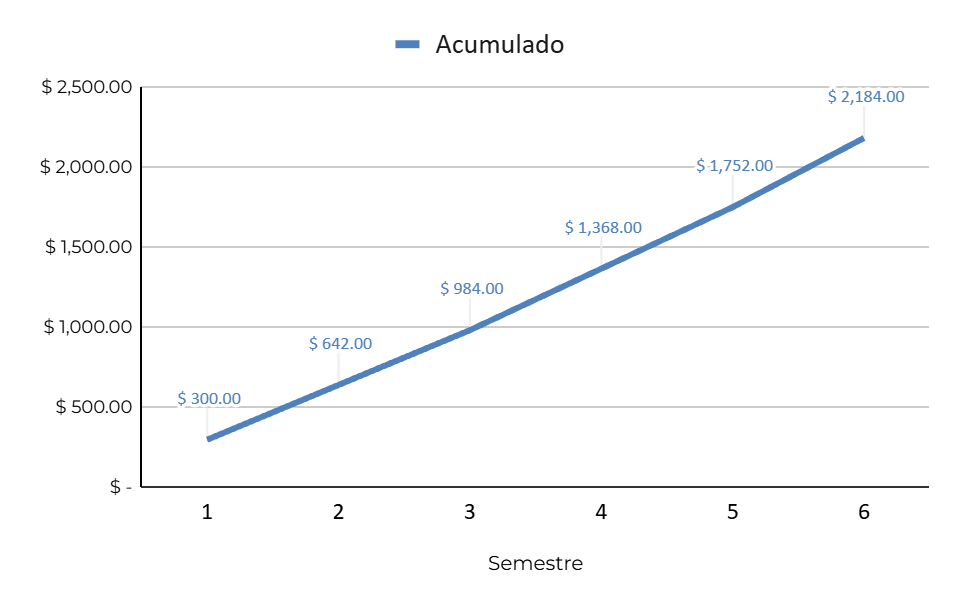
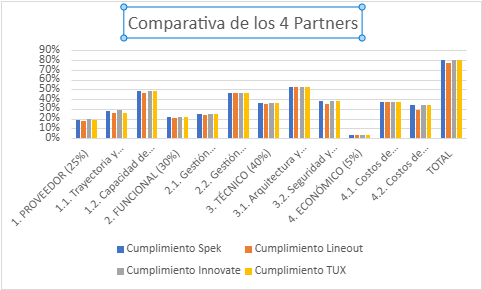
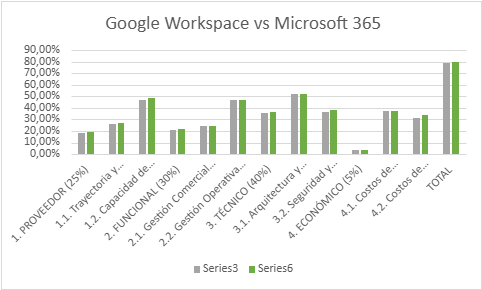
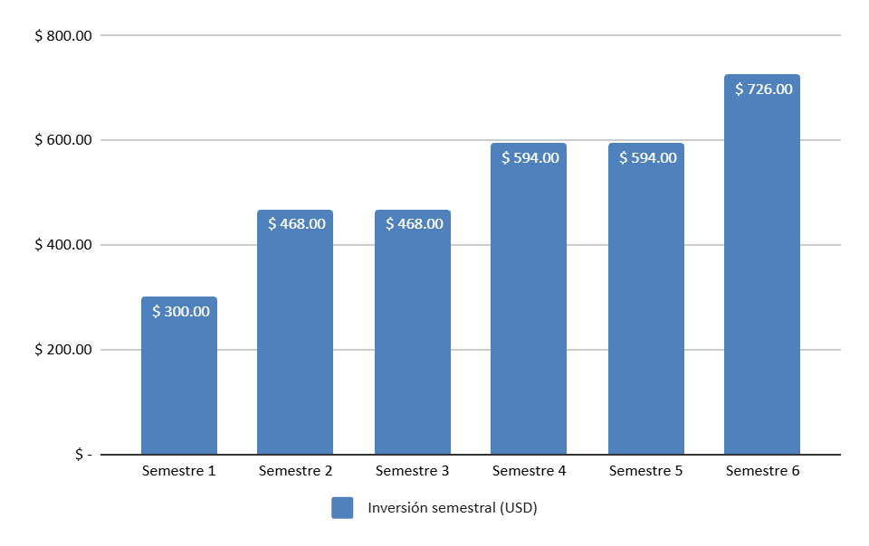
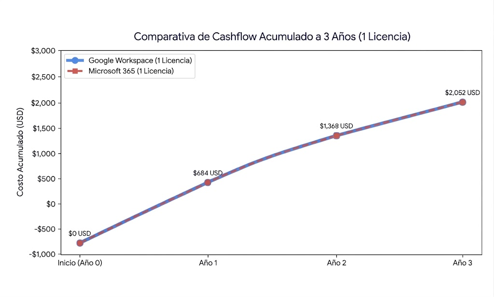
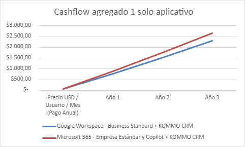
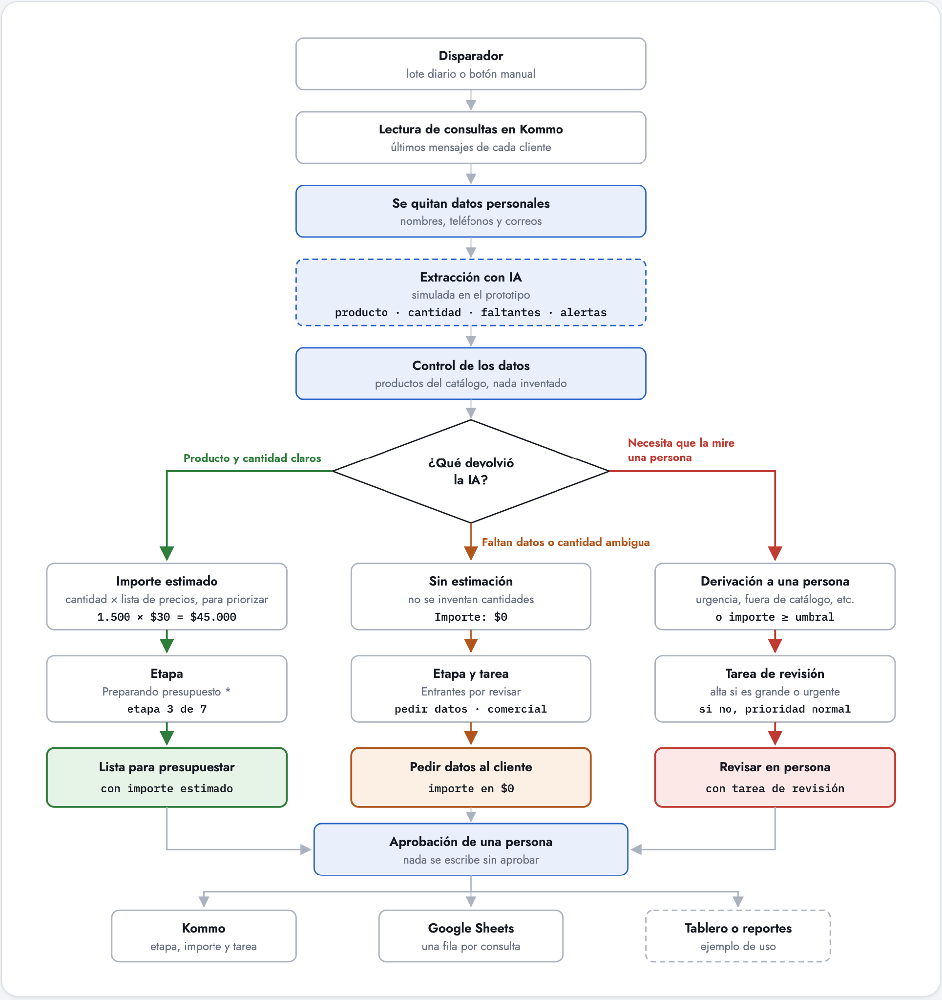

Apertura
Propósito del documento
El presente documento constituye la Carpeta de Cierre del Proyecto de consultoría desarrollado por SAKU IT Advisory & Consulting para Avios Lynch, empresa dedicada a la comercialización de avíos personalizados para la industria textil.
Su propósito es consolidar los resultados del relevamiento organizacional, el diagnóstico de la arquitectura empresarial, la identificación de oportunidades de mejora y las recomendaciones elaboradas para acompañar la transformación digital de la organización.
El proyecto se orientó a optimizar la utilización de los sistemas existentes, modernizar la administración de la información, mejorar los procesos comerciales y establecer las bases para una gestión basada en indicadores.
La propuesta comprende tres líneas de trabajo complementarias: la implementación de un entorno corporativo colaborativo en la nube, la optimización y aprovechamiento intensivo de las funcionalidades del tier “Básico” de Kommo CRM y el desarrollo progresivo de capacidades de analítica de datos.
Adicionalmente, se identificó una oportunidad de innovación mediante inteligencia artificial generativa para asistir en la interpretación, clasificación y enriquecimiento de consultas comerciales.
El documento se organiza en seis secciones: apertura, síntesis del caso, selección de solución tecnológica, innovación con IA generativa, visión integrada y conclusiones.
Esta carpeta se complementa con una presentación ejecutiva dirigida al sponsor y un sitio web navegable que reúne los principales resultados y entregables del proyecto.
Presentación del equipo de consultoría
Somos Saku IT Advisory & Consulting, los integrante de equipo de consultoría y los roles se detallan a continuación:
Daniela Beatriz Miszezun, Security & Risk Analyst,
Mariano Fioretti, Functional Analyst,,
Jennifer Ojeda, Project Mánager,,
Tomás Ezequiel Lorenzatti, Data Analyst,,
Abel Federico Guccione Leon, Product Mánager..
Destinatarios
La presente carpeta de cierre está dirigida principalmente a Ramiro, sponsor del proyecto y representante de Avios Lynch, así como a las personas responsables de la gestión comercial, administrativa y operativa de la organización.
Su contenido está diseñado para facilitar la comprensión del diagnóstico realizado, las soluciones propuestas, sus implicancias económicas y los próximos pasos recomendados.
Así mismo es importante destacar que este constituye un documento de referencia para futuras decisiones relacionadas con la digitalización, la mejora de procesos y la incorporación de nuevas tecnologías.
Síntesis del caso
Avios Lynch es una empresa dedicada a la comercialización de avíos textiles personalizados para marcas y fabricantes de indumentaria. Su actividad comprende la atención de consultas, elaboración de presupuestos, gestión de pedidos y coordinación con proveedores para satisfacer las necesidades de sus clientes.
A partir del relevamiento organizacional realizado, SAKU IT Advisory & Consulting identificó oportunidades de mejora relacionadas con la gestión comercial, la organización de la información, la digitalización de procesos y el aprovechamiento de los datos para la toma de decisiones.
Uno de los principales desafíos detectados fue la utilización limitada de las funcionalidades de Kommo CRM, herramienta que la empresa ya posee para gestionar sus consultas comerciales. Si bien el sistema permite centralizar las comunicaciones con los clientes, su uso actual se concentra principalmente en las funciones básicas de atención, sin aprovechar plenamente las posibilidades de seguimiento, automatización y análisis de información.
Asimismo, se identificó una dependencia de registros manuales, documentación física, planillas de cálculo y archivos digitales distribuidos entre distintas ubicaciones. Esta situación dificulta la centralización de la información, la trazabilidad de los pedidos y el acceso oportuno a datos actualizados por parte de los integrantes de la organización.
Otro aspecto relevante es la necesidad de fortalecer la capacidad de análisis de la empresa. Actualmente, la información disponible no se aprovecha de manera sistemática para elaborar indicadores de gestión, analizar oportunidades comerciales, identificar tendencias y respaldar la toma de decisiones estratégicas.
Frente a este escenario, SAKU definió una propuesta integral de transformación digital orientada a tres objetivos estratégicos: agilizar la atención comercial, profesionalizar la gestión y contribuir al incremento de pedidos y facturación.
Para alcanzar estos objetivos, la propuesta se estructura en tres ejes complementarios:
- Implementación de un entorno corporativo en la nube: incorporar una plataforma colaborativa que permita centralizar la información, administrar usuarios y permisos, y facilitar el trabajo conjunto entre las distintas áreas. Para ello, se evaluaron alternativas tecnológicas, incluyendo Google Workspace y Microsoft 365, proponiéndose Google Workspace como solución de colaboración y gestión documental.
- Optimización de Kommo CRM: rediseñar el embudo comercial, mejorar el seguimiento de oportunidades, establecer criterios de registro y evaluar la incorporación de automatizaciones mediante planes superiores cuando su utilización se encuentre justificada.
- Analítica de datos e indicadores de gestión: aprovechar las capacidades de reportes y dashboards disponibles en Kommo, definir indicadores clave de desempeño (KPIs) y establecer las bases para incorporar posteriormente herramientas de inteligencia de negocios que permitan integrar información comercial, administrativa y operativa.
Como complemento de esta transformación, se identificó una oportunidad de innovación mediante inteligencia artificial generativa, orientada a asistir en la interpretación de conversaciones comerciales, extraer información relevante y sugerir la clasificación de oportunidades dentro del CRM.
La recomendación de SAKU consiste en desarrollar estas iniciativas de manera gradual, priorizando el aprovechamiento de las herramientas existentes, la estandarización de procesos y la mejora de la calidad de los datos antes de incorporar funcionalidades de mayor complejidad.
De esta manera, la transformación propuesta busca reducir tareas manuales, mejorar la trazabilidad de las operaciones, fortalecer la colaboración entre las áreas y disponer de información más confiable para la toma de decisiones.
El objetivo final es acompañar el crecimiento de Avios Lynch mediante una estructura tecnológica más organizada, integrada y orientada a la gestión basada en datos, respetando las características operativas y los recursos disponibles de la organización.
Iteración 1 — selección de solución tecnológica
Diagnóstico
Diagnóstico
A partir del relevamiento integral realizado en Avios Lynch (empresa argentina con 15 años de trayectoria en el sector textil y una estructura reducida de 7 personas más una diseñadora remota en Salta), se identificó un desfasaje crítico entre su crecimiento comercial y sus capacidades de gestión interna.
- Arquitectura Actual (AS-IS): La organización operaba bajo un nivel de madurez CMM Nivel 1 (Inicial). Los procesos carecían de formalización y documentación; la información se encontraba altamente fragmentada en planillas Excel locales, registros en papel (biblioratos), mensajes de WhatsApp y carpetas en dispositivos personales (esquema BYOD sin controles lógicos). El único indicador de gestión gerencial era la comparación mensual de la facturación global frente al período previo.
- Problemática Identificada: El cuello de botella comercial más grave residía en la saturación de los canales digitales (WhatsApp e Instagram), donde dos personas absorbían toda la demanda sin lograr dar abasto, provocando la pérdida de prospectos, ventas no concretadas y un potencial daño reputacional. Asimismo, la dependencia absoluta del dueño (quien concentra pagos y grandes cuentas sin utilizar tecnología) y la ausencia total de respaldos (backups) automáticos exponían a la empresa a un riesgo crítico de pérdida de información.
- Visión de Arquitectura Destino (TO-BE): Se diseñó un modelo de "Operación y Análisis Separados" basado en el concepto de "Dato Único de Pedido". Este modelo contempla una Capa Transaccional unificada (OLTP) para las operaciones diarias de ventas, administración y stock; un Repositorio Documental Cloud con control de versiones para proteger los diseños de la diseñadora en Salta; y una Capa Analítica orientada a la toma de decisiones gerenciales mediante tableros e indicadores (KPIs).
- Brechas Clave Identificadas: Se detectó la necesidad urgente de eliminar la atención manual aislada migrando a una bandeja omnicanal (CRM), erradicar el uso del papel y planillas locales mediante herramientas centralizadas en la nube, estandarizar la orquestación de la red de 8 proveedores/talleres externos y establecer políticas básicas de seguridad y gestión de identidades (2FA y roles).
Solución recomendada
Solución Recomendada
Tras evaluar diversos escenarios de implementación (desde enfoques Big Bang locales hasta arquitecturas en la nube), el equipo seleccionó e implementó un Escenario Híbrido Modular (SaaS + Componentes Cloud integrados):
- ¿Por qué es la solución recomendada ? Porque es una estrategia de transición dividida en etapas que prioriza la resolución del problema comercial más acuciante sin alterar drásticamente la cultura organizacional. Su prioridad, se enfoca en la parametrización de Kommo CRM para unificar la bandeja de entrada de WhatsApp e Instagram, automatizar respuestas iniciales mediante un bot de bienvenida y estructurar un embudo de ventas digital. En paralelo, se implementa la migración hacia Google Workspace (unidades compartidas en Google Drive y hojas de cálculo estandarizadas en la nube) para centralizar la información comercial y eliminar el uso de cuadernos y planillas locales.
- ¿Por qué fue elegida? Se ajusta perfectamente a la cultura colaborativa pero resistente al cambio de Avios Lynch, respeta la modalidad de trabajo con dispositivos personales (BYOD) sin requerir inversiones en hardware ni servidores locales, y cumple rigurosamente con el techo presupuestario fijado por el sponsor.
- Comparación resumida con alternativas (RFP): Se evaluaron herramientas comerciales globales y partners de suites de productividad (Google Workspace vs. Microsoft 365 a través de distintos integradores como Spek, Lineout, Innovate y TUX). Google Workspace resultó la opción óptima al ofrecer una excelente relación costo-beneficio, un modelo de colaboración en tiempo real muy intuitivo y una integración fluida con herramientas de código abierto o sistemas complementarios de gestión.
- Google Workspace de un cuenta gratuita inicial y actualizarse a una suscripción Business en cuanto necesiten espacio de almacenamiento, creada a nombre de Gabriel (dueño), la que sirve para la gestión de permisos, como el escenario ideal que actualmente se acomoda con la entidad. El gráfico siguiente muestra la evolución presupuestaria en cuanto al conjunto Kommo + Google Workspace.

Evaluación económica
Resumen económico de las alternativas analizadas. Incluya gráficos comparativos y el costo total proyectado a tres años de la solución recomendada.
Evaluación Económica
La evaluación financiera se proyectó a un horizonte de 3 años bajo valores constantes, analizando el Costo Total de Propiedad (CTP) y el Costo Total del Servicio (CTS).
- Costos Iniciales (Puesta en marcha): Nulos en materia de infraestructura, hardware, consultorías externas complejas o migración de datos pagada, ya que la estrategia se apoya en configuraciones ágiles autogestionadas con el soporte del equipo de consultoría y los planes base de las plataformas.
- Costos Recurrentes: Se contemplan los abonos por licencias de suscripción en la nube y los costos operativos de los canales de mensajería. Partiendo de una cuenta administrativa base de Google Workspace Business Starter (USD 7,00 por usuario/mes con pago anual) y manteniendo los servicios de mensajería vigentes (Kommo CRM), el costo recurrente estimado se mantiene estable en USD 684 anuales para la estructura inicial del área comercial.
- Proyección a 3 años (CTP/CTS):
- Año 1: USD 684.
- Año 2: USD 684 (Acumulado: USD 1.368).
- Año 3: USD 684 (CTP Total a 3 años: USD 2.052).
- Este esquema garantiza un control estricto del Gasto Operativo (OpEx) manteniéndose holgadamente por debajo del límite de USD 100 mensuales establecido por la dirección.
A continuación se detalla el análisis comparativo de los Items de los 4 partners:

Análisis comparativos por Items de Google Workspace vs Microsoft 365:

Comparativo de ponderaciones, según: 1.Proveedor, 2.Funcional, 3.Técnico, 4.Económico
Entre Google Workspace vs Microsoft 365

Tabla resúmen de Costos:
Ítem | Proveedor 1 Google Worspace | Proveedor 2 Microsoft 365 | ||||
|---|---|---|---|---|---|---|
COSTO INICIAL/ PUESTA EN MARCHA | ||||||
| No posee | No posee | ||||
| 7 USD mensual / 84 USD anual | 7 USD / 84 USD anual | ||||
| No posee | No posee | ||||
| No posee | No posee | ||||
| No posee | No posee | ||||
Subtotal | ||||||
COSTO RECURRENTE (1er año) | ||||||
| No posee | No posee | ||||
| No posee | No posee | ||||
| No posee | No posee | ||||
| No posee | No posee | ||||
| 50 USD mensual / 600 USD anual | 50 USD mensual / 600 USD anual | ||||
Subtotal | ||||||
COSTO TOTAL DE PROPIEDAD | Subtotal | Acumulado | Subtotal | Acumulado | ||
1er año | 684 USD | 684 USD | 684 USD | 684 USD | ||
2do año | 684 USD | 1.368 USD | 684 USD | 1.368 USD | ||
3er año | 684 USD | CTPCTS 3 años | 2.052 USD | 684 USD | CTP/CTS 3 años | 2.052 USD |

TABLA RESUMEN - Producto Estándar
Ítem | Proveedor 1 Google Worspace | Proveedor 2 Microsoft 365 | ||||
|---|---|---|---|---|---|---|
COSTO INICIAL/ PUESTA EN MARCHA | ||||||
| No posee | No posee | ||||
| 14 USD mensual / 168 USD anual | 23,50 USD / 282 USD anual | ||||
| No posee | No posee | ||||
| No posee | No posee | ||||
| No posee | No posee | ||||
Subtotal | ||||||
COSTO RECURRENTE (1er año) | ||||||
| No posee | No posee | ||||
| No posee | No posee | ||||
| No posee | No posee | ||||
| No posee | No posee | ||||
| 50 USD mensual / 600 USD anual | 50 USD mensual / 600 USD anual | ||||
Subtotal | ||||||
COSTO TOTAL DE PROPIEDAD | Subtotal | Acumulado | Subtotal | Acumulado | ||
1er año | 768 USD | 768 USD | 882 USD | 882 USD | ||
2do año | 768 USD | 1.536 USD | 882 USD | 1.764 USD | ||
3er año | 768 USD | CTPCTS 3 años | 2.304 USD | 882 USD | CTP/CTS 3 años | 2.646 USD |
Plataforma y Plan | Precio USD / Usuario / Mes (Pago Anual) | Año 1 | Año 2 | Año 3 |
|---|---|---|---|---|
Google Workspace - Business Standard + KOMMO CRM | $64,00 | $768,00 | $1.536,00 | $2.304,00 |
Microsoft 365 - Empresa Estándar y Copilot + KOMMO CRM | $73,50 | $882,00 | $1.764,00 | $2.646,00 |

Stakeholders e implementación
Stakeholders e Implementación
- Actores Clave Afectados:
- Gabriel (Dueño/Sponsor): Validador estratégico y decisor final de presupuestos, quien mantiene su rol de liderazgo sin necesidad de modificar sus hábitos operativos directos.
- Equipo Comercial (Ramiro, Jessica y colaboradores): Principales usuarios operativos que abandonan el uso de WhatsApps personales y planillas aisladas para adoptar la bandeja omnicanal.
- Diseñadora Externa (Salta): Incorporada formalmente al repositorio cloud centralizado para evitar versiones desactualizadas de diseños.
- Clientes: Beneficiados directos por una atención inmediata, estructurada y sin demoras.
- Plan General de Implementación (WBS / Cronograma de 16 semanas):
- Fase 0 (S.1 - S.2): Relevamiento, mapeo de flujos comerciales y configuración inicial de accesos y dominios en la nube.
- Fase 1 (S.3 - S.6): Despliegue comercial, integración de WhatsApp e Instagram en Kommo CRM, parametrización de embudos y capacitación operativa. (Hito 1: Puesta en marcha de omnicanalidad).
- Fase 2 (S.7 - S.13): Digitalización de pedidos, diseño de carpetas centralizadas en Google Drive, migración de planillas de ventas y pruebas piloto con abandono definitivo de cuadernos físicos. (Hito 2: Operación 100% digital en ventas / Dato Único de Pedido).
- Fase 3 (S.14 - S.16): Cierre, medición de cumplimiento frente a criterios cuantitativos y entrega del plan de transición para futuras etapas organizacionales. (Hito 3: Cierre de consultoría).
Iteración 2 — propuesta de innovación con IA generativa
Oportunidad identificada
Como segunda propuesta de valor, se identificó una oportunidad de innovación mediante inteligencia artificial generativa orientada a mejorar la clasificación, el enriquecimiento y el seguimiento de las oportunidades comerciales registradas en Kommo CRM.
Durante el relevamiento organizacional se identificó que Avios Lynch recibe un volumen considerable de consultas a través de WhatsApp e Instagram, cuya gestión depende principalmente de la intervención manual del equipo comercial.
Si bien Kommo permite centralizar estas conversaciones y administrar oportunidades de venta, la información relevante de cada consulta permanece en gran medida dentro de los mensajes intercambiados con los clientes, sin encontrarse necesariamente estructurada en los campos del CRM.
Esta situación dificulta identificar rápidamente los productos solicitados, las cantidades requeridas, el estado de las negociaciones y el valor económico de las oportunidades comerciales. Como consecuencia, los responsables de ventas deben revisar individualmente las conversaciones para interpretar los requerimientos, determinar las acciones pendientes y actualizar los registros.
En el análisis de oportunidades de innovación se consideraron cuatro posibles aplicaciones de inteligencia artificial generativa: clasificación y enriquecimiento de leads, asistencia en la elaboración de respuestas iniciales, generación de resúmenes de pedidos para el área de diseño y elaboración de mensajes personalizados de seguimiento comercial.
Luego de evaluar su relevancia, complejidad y alineación con los objetivos estratégicos de Avios Lynch, se seleccionó como iniciativa prioritaria la clasificación y el enriquecimiento de leads mediante inteligencia artificial generativa.
La propuesta consiste en desarrollar un asistente capaz de interpretar conversaciones comerciales, identificar datos relevantes como producto, cantidad y características de la solicitud, detectar información faltante y sugerir la clasificación de cada oportunidad dentro del embudo de ventas definido por SAKU.
Adicionalmente, cuando exista información suficiente y se disponga de una matriz de precios validada, el sistema podría contribuir a determinar un importe comercial estimado mediante reglas de negocio.
La utilización de IA generativa se considera adecuada debido a la naturaleza no estructurada de las conversaciones, que pueden contener expresiones informales, información distribuida entre varios mensajes y diferentes formas de describir un mismo producto o cantidad.
A diferencia de una automatización basada exclusivamente en reglas fijas, un modelo de lenguaje permitiría interpretar el contexto de las interacciones y transformar información textual variable en datos estructurados.
La solución se plantea como una extensión funcional de Kommo CRM y no como su reemplazo. Su objetivo es complementar la optimización del embudo comercial y aprovechar los registros existentes para facilitar la gestión de oportunidades.
Los principales usuarios beneficiados serían los responsables del área comercial, quienes podrían disponer de información más organizada para priorizar consultas y realizar seguimientos.
Asimismo, la iniciativa contribuiría a mejorar la calidad de los datos disponibles para elaborar indicadores comerciales, analizar oportunidades potenciales y conocer los motivos e importes estimados de las ventas perdidas.
De esta manera, la propuesta se alinea con los objetivos estratégicos de agilizar la atención, profesionalizar la gestión comercial y desarrollar capacidades de análisis que acompañen el crecimiento de Avios Lynch.
Solución diseñada y validada
Diseño conceptual. La solución sigue el patrón de extracción y clasificación, el más simple que resuelve el problema. Cada consulta se procesa en cinco pasos: se leen de Kommo los últimos mensajes del lead; se reemplazan nombres, teléfonos y correos; un modelo de lenguaje extrae siempre los mismos datos (producto, cantidad, medidas, datos faltantes y alertas); reglas fijas calculan el importe estimado con la lista de precios por volumen y asignan la etapa del embudo; y un comercial aprueba el lote antes de que se escriba nada en Kommo.
La decisión central del diseño es que la IA solo interpreta el texto. El precio, la etapa y la derivación a una persona los resuelven reglas de negocio, y la aprobación final es siempre humana. Así cada resultado puede explicarse, los errores del modelo no se convierten en precios ni etapas sin control y el modelo puede reemplazarse sin rediseñar la solución.

Cuando la consulta tiene producto y cantidad, el lead pasa a "Preparando presupuesto" con un importe estimado (por ejemplo, 1.500 etiquetas de cartón colgante × $30 = $45.000). Si faltan datos, queda en "Entrantes por revisar" con importe $0 y una tarea para pedírselos al cliente: la solución no inventa cantidades. Las urgencias, los productos fuera de catálogo, los pedidos de información interna, los intentos de manipulación y los importes iguales o superiores a $1.000.000 se derivan a una persona.
Para operar se propone Claude Haiku 5.5 como modelo, con Gemini Flash como alternativa a comparar en el piloto. La orquestación se resolvería con Google Apps Script, ya incluido en Google Workspace, y la integración con la API v4 de Kommo. La lista de precios se guardaría en una hoja de Google Sheets administrada por la dirección y nunca se envía al modelo.
Prototipo. SAKU construyó un prototipo navegable ("De consulta a datos ordenados") que recorre el proceso completo sobre un lote de 12 consultas ficticias. Son funcionales la anonimización, las reglas de importe y etapa, las derivaciones, la aprobación del lote y un tablero comercial de ejemplo con prioridad por importe y ventas perdidas. Las respuestas del modelo fueron simuladas por el equipo a partir de la instrucción diseñada, y el prototipo no se conecta con la cuenta real de Kommo.
Resultados de la experimentación. El prototipo pasó por cuatro iteraciones. La primera usaba solo reglas y falló en 5 de los 12 casos: tomó el "5" de "5x3 cm" como cantidad, interpretó "para 300 bolsas" como 300 unidades de cinta, no detectó un producto fuera de catálogo ni una urgencia, y tomó "$1" de un intento de manipulación como cantidad. El diseño final resolvió los 12 casos: 5 consultas listas para presupuestar con importe estimado, 3 con pedido de datos al cliente y 4 derivadas a revisión personal. Ningún caso incompleto recibió un precio o una cantidad inventados.
Queda pendiente medir la precisión real del modelo y el ahorro de tiempo, porque las respuestas de la IA fueron simuladas.
Validación con la organización. El prototipo se presentó a Ramiro, usuario directo del proceso. Señaló que le faltaba interactividad, algo esperado porque se planteó como un ejemplo de cómo aprovechar los datos y no como una herramienta operativa. Coincidió con el equipo en que la propuesta ataca un punto de dolor importante, la gestión de la información comercial, y se acordó concentrar esta instancia en el proceso de venta. El feedback se incorporó como requisito del piloto: debe ser interactivo, estar conectado a Kommo y procesar consultas reales.
Recomendación
Recomendación: resolver dependencias previas antes de avanzar y, luego, realizar un piloto acotado con datos reales.
La evidencia respalda la propuesta. El problema es real y prioritario: 9.609 leads, 8.073 sin clasificar y tarjetas con importe $0. Ramiro confirmó su relevancia. Un enfoque solo con reglas falló en 5 de 12 casos, lo que justifica la IA, y el diseño resolvió en el prototipo todos los casos de excepción sin inventar datos. El costo del modelo es marginal.
Sin embargo, recomendar la implementación hoy sería decidir sobre una demostración. Antes de avanzar deben resolverse tres dependencias:
- Lista de precios digitalizada por producto y tramo de volumen. Sin ella no hay importe estimado.
- Confirmación del alcance de la API de Kommo para el plan contratado: lectura de conversaciones y escritura de etapa, importe, tags y tareas.
- Embudo de 7 etapas configurado en Kommo, que es parte de la solución tecnológica recomendada en la Iteración 1.
Resueltas esas dependencias, se recomienda un piloto de cuatro semanas sobre 100 a 200 leads reales anonimizados, en modo de solo propuesta y con aprobación de Ramiro y Jessica. Las metas son clasificar correctamente al menos el 90% de los leads, no inventar ningún dato y reducir en al menos un 70% el tiempo de revisión respecto de la clasificación manual. Con esos resultados, Avios Lynch podrá decidir con evidencia si procesa la acumulación histórica y activa la ejecución diaria, o si conviene reformular la propuesta.
Las dependencias tienen valor por sí mismas: una lista de precios digitalizada agiliza los presupuestos y un embudo ordenado mejora el seguimiento, aunque la organización decida no avanzar con la IA.
Visión integrada
Arquitectura destino actualizada
Incorporación de la propuesta de IA Generativa. La solución de IA no agrega un sistema nuevo a la arquitectura destino. Se apoya en las plataformas de la Iteración 1 y completa el modelo de "Operación y Análisis Separados":
- Capa transaccional (Kommo CRM): sigue siendo el sistema de registro de la gestión comercial. La IA lee las conversaciones que Kommo ya centraliza desde WhatsApp e Instagram y, con aprobación del comercial, completa la etapa, el importe estimado, los tags y las tareas. Los comerciales no cambian de herramienta.
- Entorno colaborativo (Google Workspace): aloja la lista de precios por volumen en Google Sheets, el registro de procesamiento para auditoría y el servicio que orquesta el flujo (Google Apps Script), dentro del dominio corporativo y sin servidores propios.
- Servicio externo de IA: el modelo de lenguaje se consume por API y recibe solo texto anonimizado. Es el único componente fuera de la organización y puede reemplazarse sin cambiar el resto.
- Capa analítica: la IA convierte en datos estructurados (producto, cantidad, importe y motivo de pérdida) información que hoy queda escrita solo en los chats. Esos datos alimentan los indicadores definidos en la línea de analítica: ventas potenciales, en curso, ganadas y perdidas, medidas en pesos.
Las dos propuestas se complementan. La solución tecnológica ordena dónde se registra la información, y la IA ayuda a cargarla a partir de las conversaciones con los clientes, que era la tarea que el equipo comercial no lograba cubrir. Sin el embudo ordenado, la IA no tiene dónde clasificar; sin la IA, el embudo depende de leer a mano miles de conversaciones.
Roadmap de próximos pasos
Iniciativa | Próximo paso | Horizonte | Responsable sugerido |
|---|---|---|---|
Solución tecnológica | |||
Innovación con IA Generativa |
| Dependencias: semanas 1 a 6, en paralelo con la Fase 1. Piloto: semanas 7 a 10, con el embudo de 7 etapas ya configurado. Decisión: semanas 11 y 12. | Gabriel: lista de precios y decisión final. Ramiro y Jessica: aprobación de lotes en el piloto. SAKU: integración, medición e informe del piloto. |
Costos y riesgos consolidados
Costos de la propuesta de IA Generativa. La IA no altera de forma significativa el costo total de la solución tecnológica:
- Modelo de lenguaje: se paga por uso (USD 0,10 por millón de tokens de entrada y USD 0,50 por millón de salida). Con unos 500 tokens de entrada y 150 de salida por consulta, procesar un lead cuesta alrededor de USD 0,0002. La acumulación completa de 9.609 leads costaría menos de USD 2, y aun con varios miles de consultas nuevas por mes el costo se mantiene por debajo de USD 1 mensual.
- Orquestación y almacenamiento: Google Apps Script y Google Sheets están incluidos en la licencia de Google Workspace, sin costo adicional.
- Integración con Kommo: sin costo adicional, si el plan actual habilita la API necesaria. Si se requiere un plan superior, ese costo debe evaluarse frente al tiempo ahorrado antes del piloto.
- Esfuerzo interno: el principal costo es el tiempo de la organización para digitalizar la lista de precios y revisar los lotes durante el piloto.
La propuesta de IA se mantiene dentro del límite de USD 100 mensuales de gasto operativo fijado por la dirección.
Riesgos principales de la propuesta de IA Generativa y su tratamiento:
- Extracción incorrecta (alucinación): el modelo devuelve "sin dato" en lugar de suponer, el importe siempre se marca como estimado y ningún resultado se escribe sin aprobación.
- Exposición de datos personales (Ley 25.326): anonimización previa, envío de los últimos mensajes únicamente y uso de un proveedor que no entrena con los datos. La anonimización debe validarse con conversaciones reales.
- Lista de precios desactualizada: se mantiene en una única hoja bajo la responsabilidad de la dirección.
- Dependencia de la API de Kommo y del proveedor del modelo: reglas e instrucción desacopladas del modelo, que es intercambiable. El alcance de la API se confirma antes del piloto.
- Resistencia organizacional: todo ocurre dentro de Kommo, la implementación es gradual y el piloto muestra resultados en pocas semanas.
- Sesgo hacia los mensajes más completos: revisión periódica de los leads con datos incompletos, para que una consulta valiosa mal redactada no quede relegada.
Conclusiones y recomendaciones
Qué encontramos
Avios Lynch tiene una base comercial sólida: 15 años de trayectoria, clientes que la eligen y un volumen de consultas que sigue creciendo. Ese crecimiento abre la oportunidad de acompañarlo con una gestión más ordenada. Hoy la información de ventas, administración y diseño está repartida entre planillas, registros en papel, WhatsApp y los dispositivos de cada persona. Centralizarla va a permitir trabajar con datos actualizados y protegerlos mejor.
La empresa ya cuenta con una herramienta valiosa: Kommo CRM, que reúne las conversaciones de WhatsApp e Instagram. Tiene mucho más potencial del que se usa hoy. En Kommo hay registrados 9.609 leads, y la mayoría todavía no está clasificada ni tiene un importe asignado. Ordenar esa información es una de las oportunidades más concretas del proyecto. Permitiría conocer cuánto se vende, qué consultas podrían convertirse en ventas y dónde conviene poner el foco comercial.
Qué recomendamos
- Empezar por lo que ya se tiene. El primer paso es configurar en Kommo el embudo de 7 etapas, con criterios de registro simples y compartidos. Así la herramienta que la empresa ya paga empieza a dar información para decidir.
- Adoptar Google Workspace como entorno colaborativo. Es la opción más natural para Avios Lynch: el equipo ya trabaja con Google Drive, las planillas pasan a Google Sheets sin dificultad y el siguiente plan cuesta menos que su equivalente en Microsoft (USD 14 contra USD 23,50 por usuario por mes). Proponemos arrancar con una cuenta Business Starter para administrar permisos y sumar cuentas a medida que cada área se incorpore.
- Probar la IA generativa con un piloto. Recomendamos un piloto de cuatro semanas con 100 a 200 leads reales. Primero hay que tener la lista de precios digitalizada, confirmar el alcance de la API de Kommo y configurar el embudo. Los resultados del piloto van a permitir decidir con evidencia cómo seguir.
- Evaluar un ERP más adelante. Por ahora, el control de stock y el seguimiento de pedidos pueden resolverse con planillas compartidas. Incorporar un ERP va a tener más sentido cuando estos cambios estén afianzados, o cuando la empresa decida hacer una inversión mayor.
La propuesta es accesible. El costo estimado es de unos USD 684 por año (Kommo más una cuenta Business Starter), y la IA suma menos de USD 1 por mes. Todo se mantiene dentro del límite de USD 100 mensuales fijado por la dirección.
Factores clave para el éxito
- Adopción gradual: los cambios se incorporan por etapas, para que el equipo se adapte sin afectar la operación diaria.
- Responsables compartidos: sumar un segundo responsable de las cuentas administrativas da continuidad a la operación ante ausencias.
- Acompañamiento de la dirección: su compromiso da el ejemplo en la adopción de las nuevas herramientas.
- Revisión de resultados: medir al cierre de cada fase permite ajustar el rumbo con datos.
Avios Lynch no necesita incorporar mucha tecnología nueva. Su oportunidad está en aprovechar mejor la que ya tiene. Los cambios propuestos sientan las bases para que, más adelante, las automatizaciones con IA y el uso de los datos potencien su crecimiento, con herramientas del mismo ecosistema de Google Workspace: Google Sheets para centralizar la información, Apps Script para automatizar tareas y Looker Studio para visualizar los indicadores del negocio.